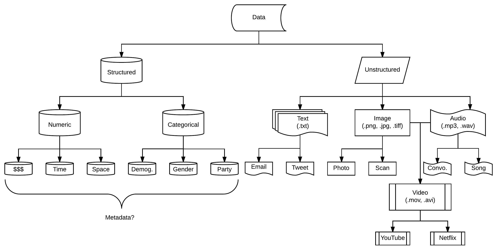
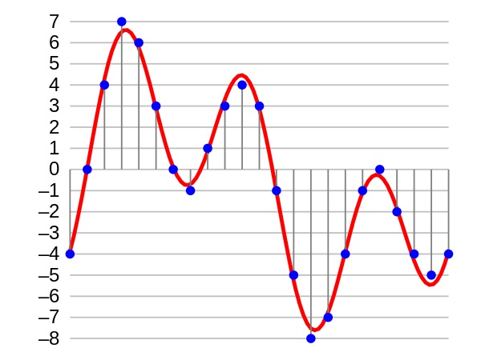

Data types

Jeremy Leipzig
Department of Information Science
College of Computing and Informatics
Drexel University
Some themes
There are many different types of data,
which can be quite similar if looked at closely,
but type is oftern determined by purpose or perspective.
Data organization can be as important as the data iteself.
Every type of data presents its own unique challenges.
A taxonomy of data types?
The cover picture is a cartoon, intended to help map out what different data types are.
In reality, data types overlap, with blurry boundaries that
often depend more on context, use, and mode of analysis.
For a related discussion, check out levels of measurement.
Structured
Organized, well-formed data, sometimes a term for database.
This includes structured data objects.
If referring to an individual datum, then categorical or numeric.
There is generally some expectation of order and organization.
- Some examples:
-
Structured data formats, e.g., xml, json, csv, tsv
(not necess. the contents).
-
Language-specific data objects, e.g., dict, list, tree
(not necess. the contents).
-
Categorical elements (types), e.g., gender, party, shape
-
Numerical elements (quantities), e.g., price, time, dimension
Unstructured
Raw, messy data, often of a high-level nature.
Requires parsing or object/pattern recognition.
Usually, high-level impressions of human or natural phenomena.
These types require more preprocessing steps.
- Some examples:
-
Unstructured data formats, e.g., txt, mov, wav, mp3, w4, png.
-
Encodings: utf-8 (text); rgb pixels (images); waveform, pitch, and intensity (audio)
-
Video is just ordered and aligned frames of image and audio.
Bits and bytes
Electronic information is stored as binary switches—0s and 1s.
A single switch is called a bit.
These switches come in packets of eight, called bytes.
How many ways are there to configure one byte?
They are ordered, so the answer is:
Let's look at how bytes make up different data types.
Numbers
For computers, there are two main types of numeric data.
These are integers and floating point numbers.
"Ints" are positive and negative counting numbers,
and "floats" are decimal numbers.
Int byte allotments depend on size and programming language.
Floats take up 4 or 8 bytes, depending on the precision level.
Integers are always exact, while floats can be approximate.
This means big ints can take up more space than big floats!
For counting and indexing, use ints.
For for math and calculation, use floats.
Text
Natural languaue texts are sequences of symbols.
There is no such thing as "plain text."
How are individual symbols represented (encoded)?
As sequences of bytes!
- How many?
-
It's actually variable, which took a lot of trouble to figure out.
-
Originally, the English-centric world stuck to single bytes (ASCII),
-
but only seven bits were used,
-
and other languages stuck their characters in.
-
This caused incompatibilities, consortia were held ,
-
which led to the modern standard: utf-8.
Text processing
Fortunately, you don't have to sweat this stuff much.
For data scientists, text is more about processing.
What's easy for humans (semantics) is hard for machines.
- Common logistical challenges:
-
management of character encodings
-
scrubbing, e.g., removing noisy, automated content
-
domain (topic/content source) and language specificity
-
segmentation, or separation into "appropriate" chunks
-
Named entity recognition
Text processing (tweets)
Twitter is a source of unstructured text.
Not only are the characters of different languages mixed throughout,
but it is also dense with ASCII-derived emoticons
and multi-byte emojis.
Images

Images
There are two main types of image data.
Raster images made up of tiny dots have set resolutions,
while vector images are recipes with infinite resoluton.
The two have different value.
Raster images are good for rendering the real world,
while vector images are good for rendering designs.
So as sources of data, we'll focus on rasters,
and for brevity, just call these "images."
Image data
Images are two-dimensional arrays of color.
There are tiny dots called pixels arranged in a grid.
To each pixel are devoted some "bytes."
Just how many depends on the format.
E.g., black/white images only need one byte per pixel.
This makes possible 256 shades of gray.
- For color, there's the jpg/jpeg format:
-
Each of red, green and blue are devoted one byte.
-
RGB color combinations meld to form overall colors.
-
This makes 256 x 256 x 256 ~ 16 million color possibilities.
-
Unlike png, jpg has no byte for "alpha", i.e., transparency.
Image data

Audio
Digital audio is a numeric array of intensity (amplitude).
Each element in an array is called a "sample."
The number of bits given each sample sets the resolution,
and is the number of intensities that can be represented.
Audio

A sound wave, in red, represented digitally, in blue (after sampling and 4-bit quantization).
What we actually hear, though, are frequencies,
and frequencies are the rates at which intensities occur.
The number of samples per second is the sampling rate (SR).
If the SR is too low, high-frequency sounds can't be represented.
- So there are two main ways to analyze audio:
-
the average amplitude in the "time domain," and
-
the component amplitudes in the "frequency domain."
Audio
 The Fourier transform relates the function's time domain, shown in red, to the function's frequency domain, shown in blue. The component frequencies, spread across the frequency spectrum, are represented as peaks in the frequency domain.
The Fourier transform relates the function's time domain, shown in red, to the function's frequency domain, shown in blue. The component frequencies, spread across the frequency spectrum, are represented as peaks in the frequency domain.
Video
Sequences of images can be associated to audio data.
This is all that it takes to make a video!
Of course, there's silent videos where no audio exits.
These are just sequences of images.
The important concept we're developing is data association.
What we're leaning on here is "metadata," or data about data.
Images in sequence are enriched with data about order.
Metadata
Structured, descriptive information about a resource (DCMI Glossary; Weibel, 1995)
Data about the content, quality, condition, and other characteristics of data (FGDC Glossary, 1992)
Additional information necessary for data to be useful (Musik, 1997)
Metadata types
As mentioned, this refers to data about (describing) data.
- There are two main kinds:
-
Structural: Indicates how compound data is arranged, e.g.,
the ordering of pages to form chapters.
-
Descriptive: Describes individual instances of other data, e.g.,
title, abstract, or author.
Only read the introduction and sections 1 (history), 2 (definition), 3 (types), and 6 (use).
Geospatial data
 Map by Dr. John Snow of London, showing clusters of cholera cases in the 1854 Broad Street cholera outbreak. This was one of the first uses of map-based spatial analysis.
Map by Dr. John Snow of London, showing clusters of cholera cases in the 1854 Broad Street cholera outbreak. This was one of the first uses of map-based spatial analysis.
Geospatial data
Fine-grained geospatial data is often numeric.
On a globe, latitude and longitude represent angles.
There are different types of Lat/lon-constructed "layers."
These can represent points, lines, and polygons.
Remember, the world is not flat, i.e., lat/lon are not x/y!
So when relating objects, use appropriate formulae.
(see Haversine)
- A few uses of geospatial data:
-
map making, in general (natural and social)
-
directions, routing and tracking shipments
-
tracking disease spread
-
aggregating and correlating health demographics
Geospatial data has "layers"

Is Geospatial data just lat/lon?
Geospatial data is not always what it seems.
Sure, lat/lon points describe locations and shapes,
but named locations, e.g., "Philadelphia", count too.
So, unstructured text is rife with location data!
Beyond that, there's also satellite imagery.
Is this geospatial type structured, or unstructured?
- Some examples of geo-spatial data:
-
triangulated cell signals
-
gps-reported lat/lon pairs
-
references to named locations in text
-
satellite and aerial imagery
-
elevation
Temporal data

Temporal
Temporal just means time-ordered.
Most electronic data has a time stamp (metadata).
Audio data is naturally temporal.
Anything can be time-ordered—images become a video.
Even the progression of words can be modeled temporally.
However, most timeseries are 1-d numeric, like stock charts.
- Common tasks:
-
forecasting, e.g., future prediction of stock prices
-
signal estimation, e.g., noise cancellation in sound
-
segmentation, e.g., break a phone call into speeches
-
anomaly detection, e.g., detecting seismic events
Categorical
Categorical data take on a limited numbers of values.
Frequently, this type of data will be seen as "groups."
- Some examples:
-
blood type: A, B, AB, or O
-
country of origin
-
political party
though non-numeric, quantitative analysis is still possible
e.g., one may study population sizes of blood types
Recap
There are many different types of data,
which can be quite similar if looked at closely,
but type is oftern determined by purpose or perspective.
Data organization can be as important as the data iteself.
Every type of data presents its own unique challenges.
- Up next, BIG data:
-
Dive deeper into data challenges
-
BIG DATA (volume), but also...
-
velocity, veracity, and variety.
-
Data-specialized technologies.